From the depth of the sea to the breadth of the land —
St. Michael harvests excellence through marine & agricultural operations
St. Michael Fisheries is a division of St. Michael Group of Companies dedicated to marine resource development, fisheries operations, seafood supply, and sustainable coastal growth. We work in close partnership with fishing communities along the Tamil Nadu coast to deliver consistent, quality marine products.
"Harvesting Excellence
From The Sea"
St. Michael Fisheries Division
A structured pipeline — from coastal procurement to final distribution — built on professionalism, hygiene, and community partnership.
We work closely with fishing communities and marine resources to ensure consistent procurement and supply of quality seafood products from coastal waters.
Efficient transportation systems ensure smooth movement of marine products from coastal procurement points to distribution networks across the region.
Every stage of handling focuses on freshness, hygiene, and maintaining product quality to meet the highest standards of marine food safety.
Supplying marine products to local markets, businesses, institutions, and future export opportunities across national and international channels.
From the open ocean to your table — a disciplined, transparent process that maintains integrity and freshness at every step.
Our fisheries operations are supported by purpose-built infrastructure that maintains the integrity of every product from sea to market. Built for scale, reliability, and long-term growth.
St. Michael Fisheries goes beyond business — we invest in the livelihoods of fishing communities and the sustainable development of coastal regions.
Promoting economic growth by creating stable, fair marine-related opportunities for local fishing communities and their families.
Supporting local coastal communities through sustainable business activities that respect and preserve marine ecosystems.
Creating meaningful employment opportunities for local workers, youth, and families in the marine and logistics sectors.
Operating with environmental responsibility to protect marine resources for future generations and long-term viability.
Our roadmap for marine operations is ambitious — expanding reach, infrastructure, and sustainability across Tamil Nadu's coastline.
Scaling procurement capacity and coastal operational reach.
Modern transport infrastructure for faster, fresher delivery.
Upgraded facilities, cold chains, and operational systems.
Building a distribution network across India's domestic market.
Entering international seafood markets with quality assurance.
Growing Tomorrow Through Agriculture
St. Michael Farms focuses on responsible agriculture, land cultivation, sustainable farming practices, and long-term agricultural development — cultivating the land of Tamil Nadu with care and vision.
From soil to harvest — a complete agricultural workflow built on modern practices, sustainable resource management, and community development.
Preparing and managing agricultural land through systematic clearing, soil conditioning, and infrastructure development for optimal cultivation.
Managing planting cycles, crop selection, and agricultural activities aligned with seasonal patterns and market demand.
Maintaining water resources and agricultural productivity through efficient irrigation systems that conserve water and maximize yield.
Ensuring effective collection and distribution of agricultural produce through structured harvest planning and post-harvest management.
A visual representation of the farm ecosystem — from land preparation to market delivery, following sustainable agricultural principles.
St. Michael Farms adopts progressive, sustainable agricultural methods that balance productivity with environmental stewardship — building a foundation for long-term food security and growth.
To contribute to agricultural growth through sustainable and responsible farming practices that benefit communities, land, and livelihoods.
To become a recognized agricultural division supporting food production and land development across Tamil Nadu and beyond.
"Growing Tomorrow
Through Agriculture"
St. Michael Farms Division
Every operation within St. Michael Natural Resources Division is guided by a deep commitment to environmental stewardship — building a legacy that endures.
Protecting natural resources — both marine and agricultural — through responsible operational practices that minimize environmental footprint.
ProtectBalancing business growth with environmental care — ensuring every expansion maintains ecological integrity and resource longevity.
BalanceSupporting local communities and livelihoods through inclusive business practices that create lasting social and economic value.
EmpowerCreating value for future generations by managing resources wisely today — a legacy of stewardship that stands the test of time.
LegacyNumbers that reflect our operational reach, community partnership, and commitment to building a diversified natural resources ecosystem.
Milestones, ceremonies, and real moments from St. Michael Fisheries Company — captured as we built something meaningful.
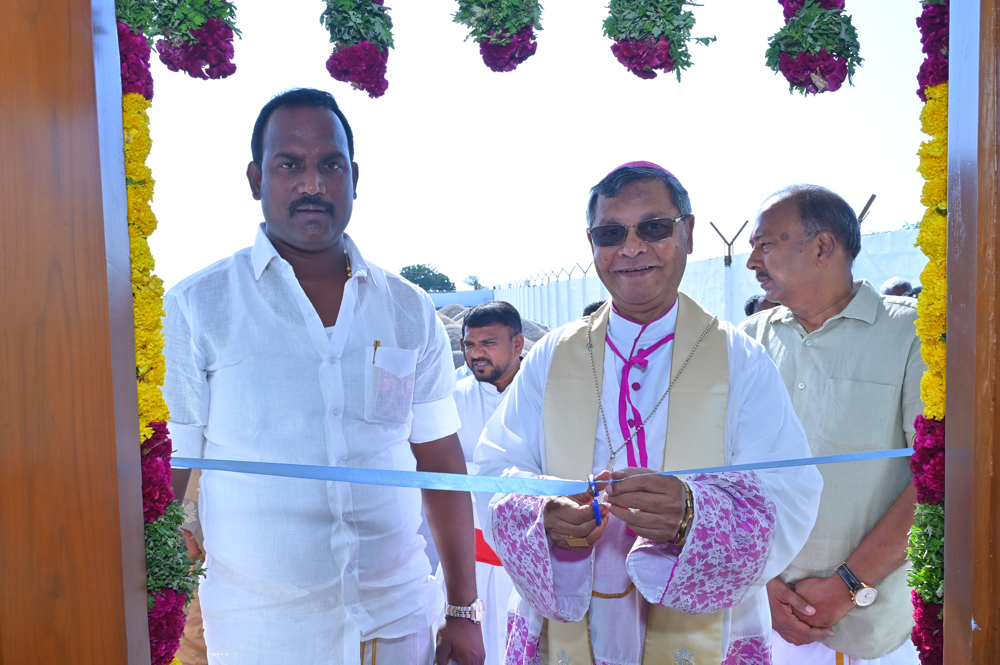
Featured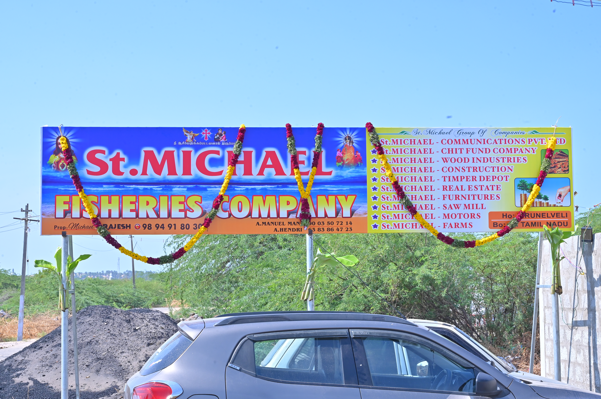
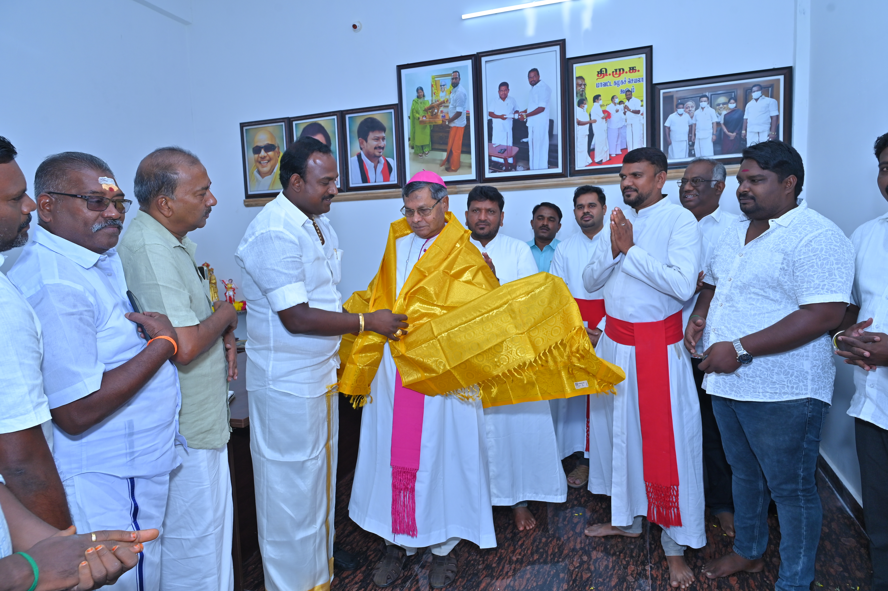
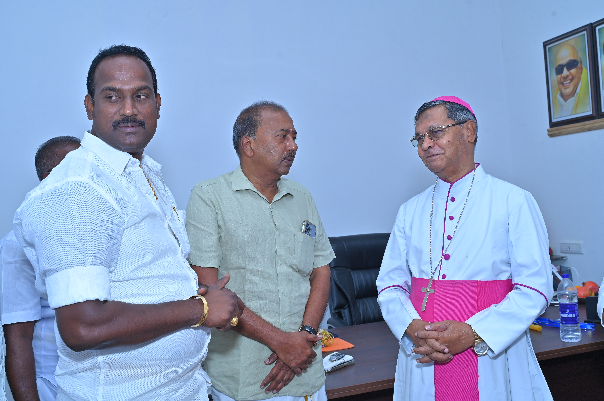
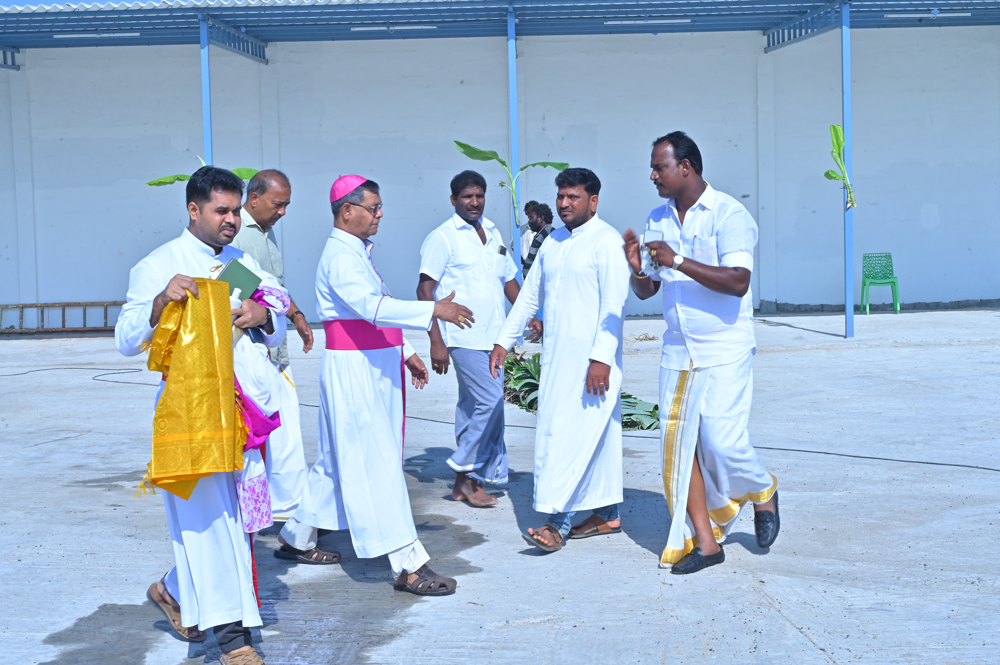
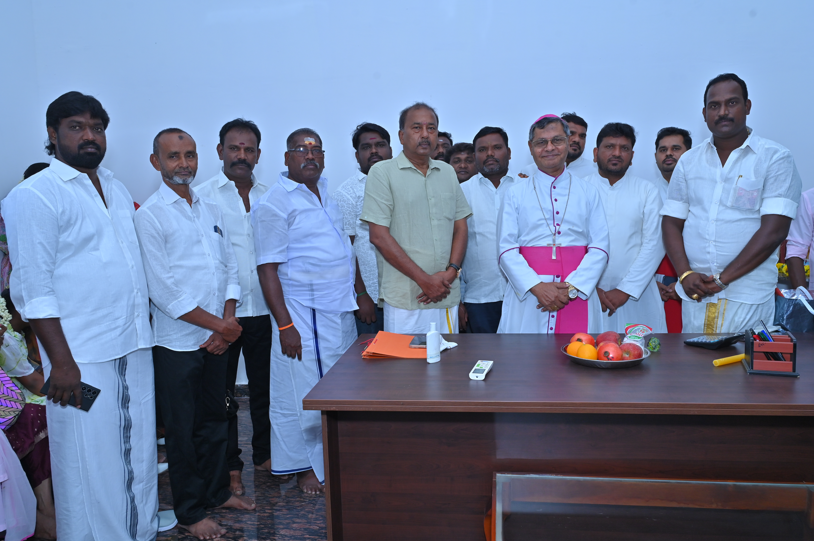
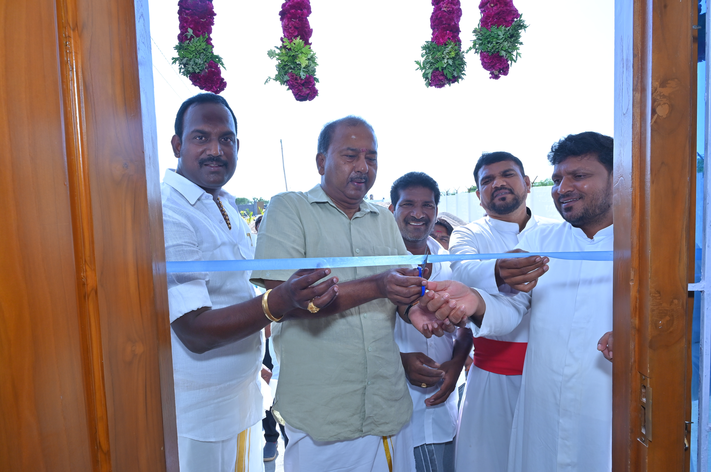
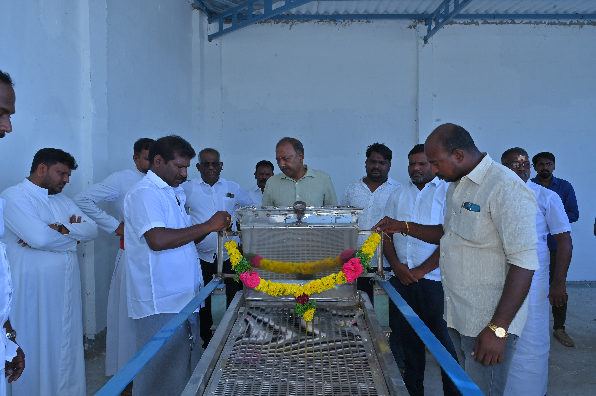
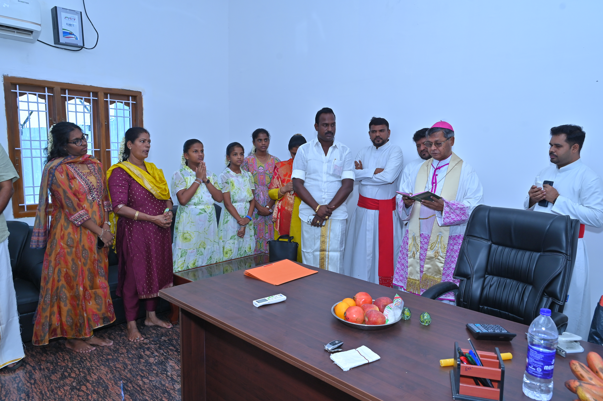
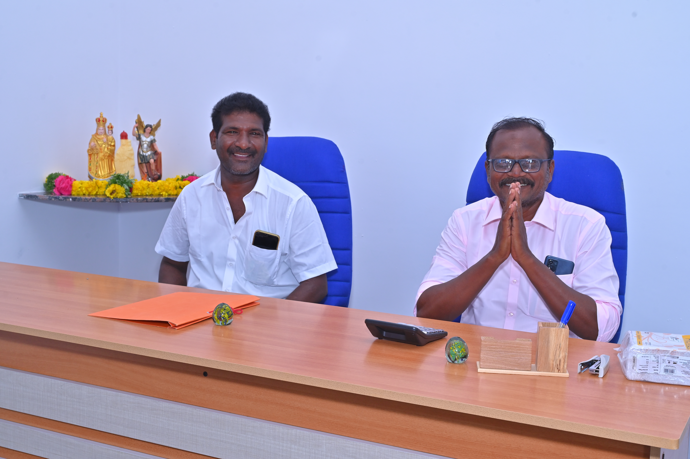
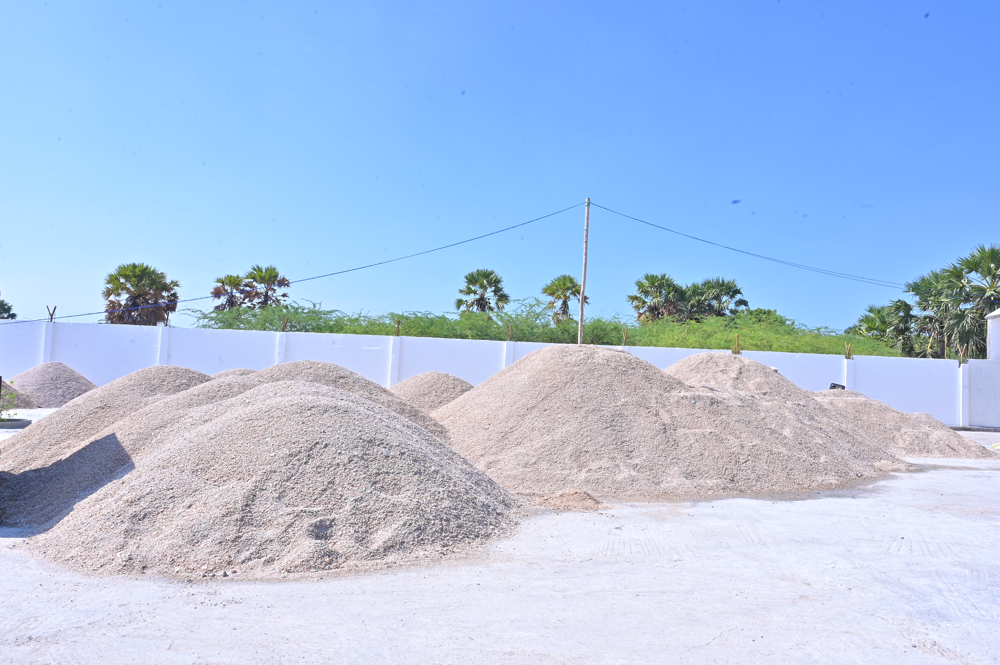
Ongoing and upcoming projects that define the trajectory of St. Michael Natural Resources Division.
Expanding our marine operations capacity, upgrading procurement infrastructure, and deepening coastal community partnerships.
Developing additional agricultural land, improving irrigation systems, and scaling sustainable farming operations.
Preparing fisheries for certified export to domestic and international markets with quality standards.
Building an integrated, sustainable farming ecosystem combining organic practices with modern technology.
Stay connected with the latest from St. Michael Natural Resources Division — operations, achievements, and community milestones.
St. Michael Fisheries has deepened partnerships with coastal fishing communities, expanding our marine procurement footprint.
Learn More →St. Michael Farms has commenced land preparation activities for the next phase of agricultural expansion in the Tirunelveli region.
Learn More →Our operations continue to create meaningful employment and income opportunities for local workers and fishing community members.
Learn More →Whether you're a fishing community partner, agricultural investor, or business collaborator — we'd love to hear from you.